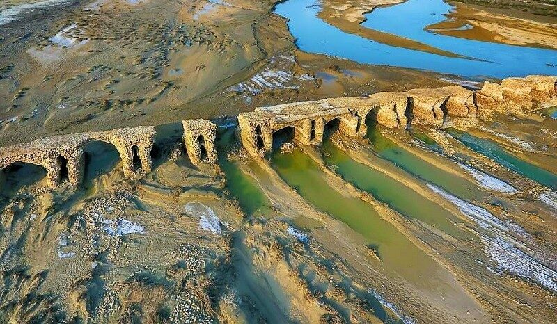
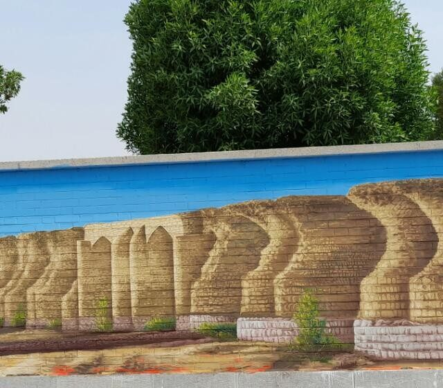
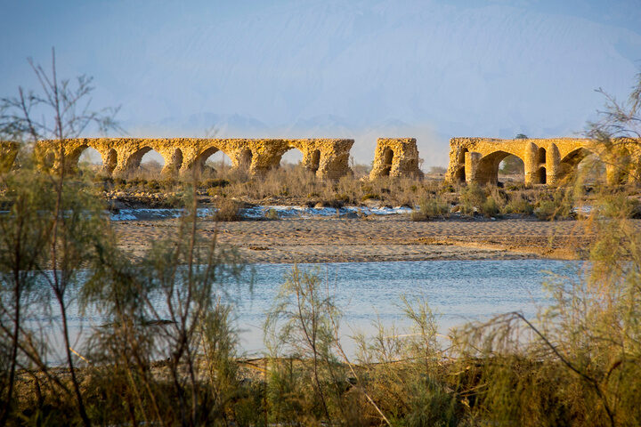
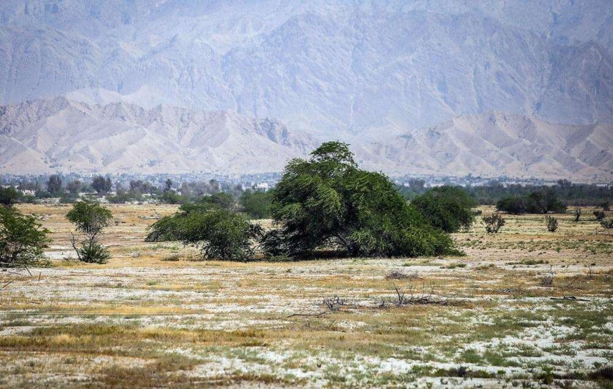

Latidan Bridge
A Safavid masterpiece of over 1 km with 233 arches, built with traditional sarooj mortar adapted to the hot, humid climate of the south.

A hidden gem of southern Iran, where a 500-year-old Safavid bridge with 233 arches still tells its story across the Kol River.
0
Years old (Safavid era)
0
Metres in length
0
Stone arches
0
National heritage no.

Latidan — also known as Kolometli — is an ancient village in the Gachin rural district of Bandar Abbas county, Hormozgan province, southern Iran. It is bordered by Mount Latidan to the north, the Kol River to the west, and the villages of Gachin-e Bala and Domilo to the east and north-east.
The village owes its fame to Latidan Bridge, the longest historical bridge in Iran. Built during the Safavid period with 233 arches and stretching over a kilometre — roughly three times the length of Isfahan's famous Si-o-se-pol — it once carried the caravan route between the Persian Gulf and Lar, a vital artery of southern trade.
Province
Hormozgan
Era
Safavid
History and untouched nature side by side in southern Iran
A Safavid masterpiece of over 1 km with 233 arches, built with traditional sarooj mortar adapted to the hot, humid climate of the south.

A seasonal river with a wide bed that floods dramatically during the rainy season and sustains agriculture across the region.

Rocky heights north of the village offering sweeping views over the plain, the river bed and the neighbouring settlements.
Arabi, Nimekar, Gachin-e Bala and Domilo surround Latidan, each preserving traditional architecture and rural life.
Click any photo to view it full size
Five centuries in five milestones
The bridge was built on the caravan route linking Bandar Abbas with Lar and inland Persia, passing through Mogh Ahmad, Dasht-e Sarahu, the Jongoy caravanserai, Arabi and Qaleh Paru.
Travellers and historians described it as the most important surviving structure of the southern trade route's golden age.
On 21 April 1998 the bridge was registered as national heritage site no. 2005 of Iran.
The surviving sections were restored in two phases to protect them from the seasonal floods of the Kol River.
Hormozgan's Cultural Heritage, Tourism and Handicrafts Department, together with heritage patrons, is pursuing a new restoration plan for this symbol of regional identity.
Locate the bridge, the village, the mountain and the river
Roughly 50–80 km west of Bandar Abbas in Hormozgan province, spanning the seasonal Kol River near the villages of Latidan, Nimekar and Arabi.
Locals name it after the Kol (Kul) River whose wide, flood-prone bed the bridge crosses.
Late autumn to early spring (November–March), when southern Iran enjoys mild, pleasant weather.
No — the site is open and free to visit. However, there are virtually no tourist facilities nearby, so plan accordingly.